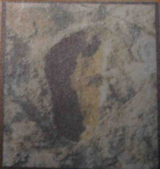
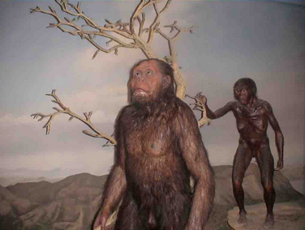

阿 法 南 猿
地殼的版塊運動，在非洲東部逐漸形成了大裂谷，不但大幅改變地形，也改變了氣候與生態。 住在裂谷西邊的猿類，繼續在雨林裡生活；裂谷東邊的森林面積縮小，有些猿類適應了較乾燥而開闊的草原環境， 而演化出兩足行走，成為人類的祖先。

阿法南猿腳印
大約在375萬年前，非洲坦尚尼亞的拉吐里附近火山爆發，有三隻阿法南猿在被雨打溼的火山灰上走過，留下了一串足跡。 這些腳印變成了化石，而且在1975年被發現時，還保存得相當完整。這些腳印足以證明阿法南猿以兩族走路。

發現露西
1974年，美國古人類學家的約翰生，在東非衣索比亞的哈達，發現了一具三百多萬年前的骨骸化石，命名為阿法南猿。
這隻阿法南猿雖然已經成年了，但體型依然相當嬌小，而且從各方面看來，還是很像黑猩猩。但是牠具有一項相當特別，
而且與其它猿類大不相同的特徵，就是能以兩足行走，所以牠可能是我們的祖先。調查隊員在發現化石的那天晚上，
聽到收音機傳來披頭四的歌曲「露西帶著鑽石在天空」，所以把這具化石暱稱「露西」。